Contents
Introduction
load('/Users/saif/Documents/GitHub/theoreticalcompneuro/Homeworks/HW4/contrast_response.mat')
1 A
sr = 2000;
t_spikes = spikeTimes{9};
intvl = 20;
samples = sr*intvl;
m = t_spikes <= samples;
potentials = m(m~=0);
t = t_spikes(m)/2000;
figure
plt = stem(t, potentials);
set(plt, 'Marker', 'none')
ylim([0,1.02])
xlabel('T (s)', 'FontSize', 16);
ylabel('AP (Binary for Spikes)','FontSize',16);
title('Action Potentials (First 20s)','FontSize',16)
width=900;
height=600;
set(gcf,'position',[0,0,width,height])
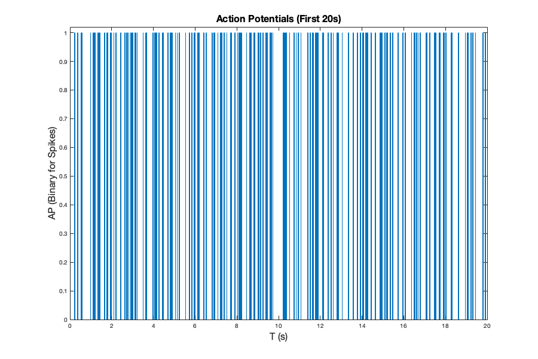
1 B
[nspike, nsample] = hist(t_spikes(m), 200);
t = nsample / 2000;
r = nspike / 0.1;
figure
plot(t,r)
xlabel('T (s)');
ylabel('FR (#/s)');
title('Firing rate against Time (first 20s) of trial with highest contrast')
grid on
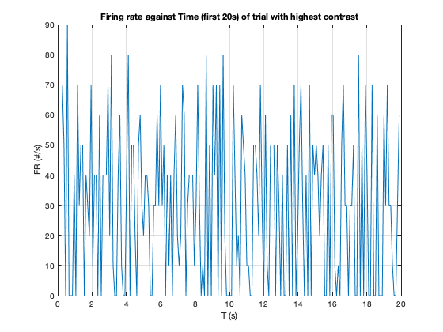
1 C
x = -5000:1:5000;
sig = 70;
gg = gaussmf(x,[sig 0]);
gg = 2000*gg / (sum(gg));
for trial = 1:9
contrast = contrasts(trial);
t_spikes = spikeTimes{trial};
s_array = zeros(1,numel(stimulus));
s_array(t_spikes)=1;
conv_firing{trial} = conv(s_array(1:numel(stimulus)),gg,'same');
t = 1:numel(stimulus);
subplot(3, 3, trial);
plot(t/2000, conv_firing{trial})
xlabel('T (s)','FontSize',16);
ylabel('Rate (Hz)','FontSize',16);
title(['contrast =',' ',num2str(contrast)]);
width=900;
height=600;
set(gcf,'position',[0,0,width,height])
end
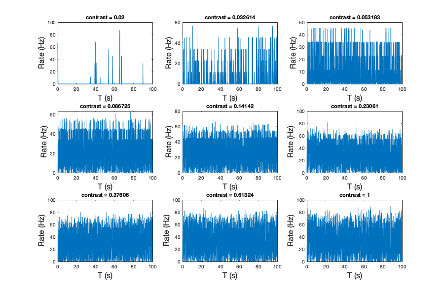
1 D
frate = zeros(1, 9);
for i = 1:9
nspike = numel(spikeTimes{1,i});
frate(i) = nspike/100;
end
plot(contrasts, frate)
xlabel('Contrast');
ylabel('FR (#/s)');
title('Firing Rate Averaged on Contrast')
grid on
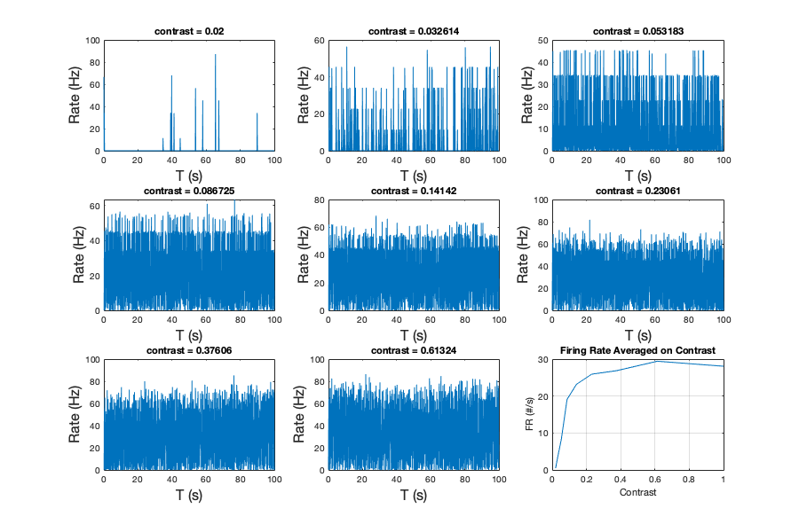
1 E
tau = 0:1:500;
y = zeros(numel(tau),9);
for i = 1:9
contrast = contrasts(i);
sv = stimulus * contrast;
t_spikes = spikeTimes{1,i};
for t=1:numel(tau)
new_s_t = t_spikes - tau(t);
new_s_t = new_s_t(new_s_t>=1);
svals = sv(new_s_t);
sumsvals = sum(svals);
y(t,i) = sumsvals/numel(t_spikes);
end
end
for i = 1:9
y(:,i) = y(:,i)./(norm(y(:,i)));
end
figure
for i = 1:9
contrast = contrasts(i);
subplot(3,3,i);
plot(tau/2, y(:,i));
xlabel('\tau (ms)');
ylabel('Stim Val');
title(['Contrast = ', num2str(contrast)]);
xlim([0,250])
set(gca, 'XDir','reverse')
grid on
end
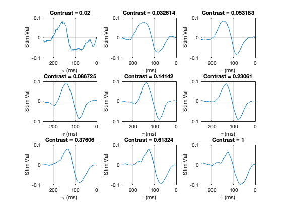
1 F
2 A
for i = 1:9
contrast = contrasts(i);
sv = stimulus * contrast;
STA = y(:,i);
intensity{i} = conv(sv, STA, 'full');
end
for i = 1:9
contrast = contrasts(i);
subplot(3,3,i);
t = (1:numel(intensity{i}))/numel(intensity{i})*20;
plot(t, intensity{i});
xlabel('T (s)');
ylabel('I');
title(['Contrast = ', num2str(contrast)]);
grid on
end
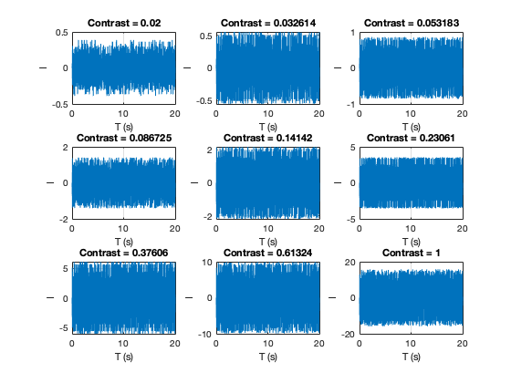
2 B
trial = 9;
sig = 20;
t = 1:numel(stimulus);
t_spikes = spikeTimes{trial};
x = -5000:.5:5000;
gauss = gaussmf(x, [sig 0]);
gauss = 2000*gauss/(sum(gauss));
s_array = zeros(1, numel(stimulus));
s_array(t_spikes) = 1;
f1c = conv(s_array, gauss, 'same');
f1c = f1c(1:numel(stimulus));
t2a = intensity{trial};
t2a = t2a(1:numel(stimulus));
t2a = t2a*(max(f1c)/max(t2a));
tstore{trial} = t2a;
fstore{trial} = f1c;
t2a(t2a<0)=0;
figure
plot(t/2000, f1c)
hold on
plot(t/2000, t2a)
xlabel('T (s)');
ylabel('FR (#/s)');
title(['Trial', num2str(trial)]);
xlim([10, 15])
legend('Firing Rate','Intensity')
grid on
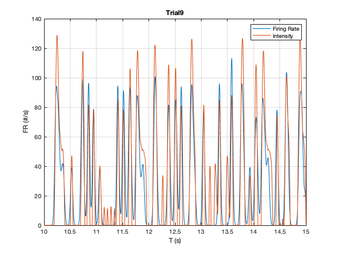
2 C
3 A
k = 1;
phi = 0;
sig = 2/k;
sigmax = sig;
sigmay = sig;
figure
[x, y] = meshgrid(-5:.1:5);
z = (1/(2*pi*sigmax*sigmay))*exp(-(x.^2)/(2*(sigmax.^2))-(y.^2)/(2*(sigmay.^2))).*cos(k*x - phi);
surf(x,y,z)
xlabel('x (o)')
ylabel('y (o)')
title('GF 2D Surface');
figure
image(z,'CDataMapping','scaled');
set(gca,'XTickLabel',-4:5)
set(gca,'yTickLabel',-4:5)
xlabel('x (o)')
ylabel('y (o)')
title('GF Colorplot');
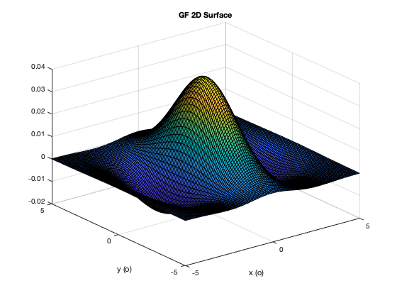 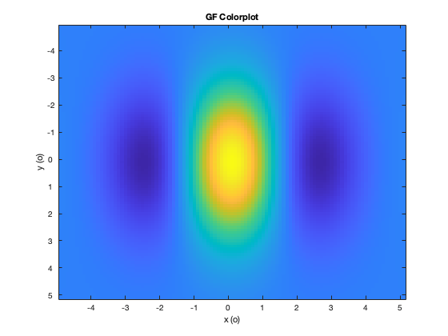
3 B
alpha = 1/15;
tau = 0:0.5:300;
vals = alpha*exp(-alpha*tau).*(((alpha*tau).^5)/(125)-((alpha*tau).^7)/5040);
plot(tau, vals)
set(gca,'XDir','reverse')
xlabel('\tau (ms)')
ylabel('Dt (Hz)')
title('Spatial Receptive Field Temporal Evolution');
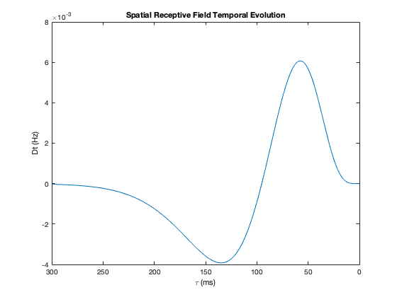
3 C
k = 1;
phi = 0;
sig = 2/k;
sigmax = sig;
sigmay = sig;
tau = 50:50:300;
alpha = 1/15;
[x, y] = meshgrid(-5:.1:5);
for i=1:numel(tau)
z = ((1/(2*pi*sigmax*sigmay))*exp(-(x.^2)/(2*(sigmax.^2))-(y.^2)/(2*(sigmay.^2))).*cos(k*x-phi)).*(alpha*exp(-alpha*tau(i)).*(((alpha*tau(i)).^5)/(125)-((alpha*tau(i)).^7)/5040));
subplot(2,3,i);
contour(x,y,z)
xlabel('x (o)')
ylabel('y (o)')
title(['\tau = ', num2str(tau(i)), 'ms']);
colorbar('eastoutside')
end
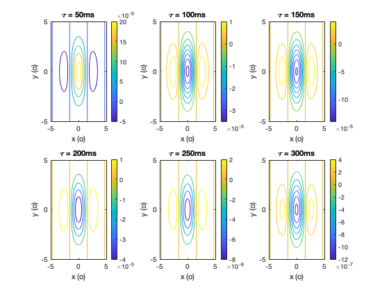
3 D
phi = 0;
t = 0;
w=800;
A = 1;
x = 0:0.1:200;
y = 0:0.1:200;
oo = 0.5*pi;
K = 0.2;
z = A*cos((K*x*cos(oo))+(K*y*sin(oo))-phi).*cos(w*t);
figure
image(z,'CDataMapping','scaled');
title('Counterphase Grating for t = 0');
set(gca, 'xtick', [])
set(gca, 'ytick', [])
t = linspace(0, 2, 20);
oo = linspace(0, 2*pi, 20);
figure
for i=1:numel(t)
z = A*cos((K*x*cos(oo(i)))+(K*y*sin(oo(i)))-phi).*cos(w*t(i));
subplot(4,5,i);
image(z,'CDataMapping','scaled');
title(['t = ', num2str(t(i))]);
set(gca, 'xtick', [])
set(gca, 'ytick', [])
end
figure
for i=1:numel(t)
z = A*cos((K*x*cos(oo(i)))+(K*y*sin(oo(i)))-phi).*cos(w*t(i));
image(z,'CDataMapping','scaled');
title(['Counterphase Grating for t = ', num2str(t(i))]);
set(gca, 'xtick', [])
set(gca, 'ytick', [])
pause(0.3);
end
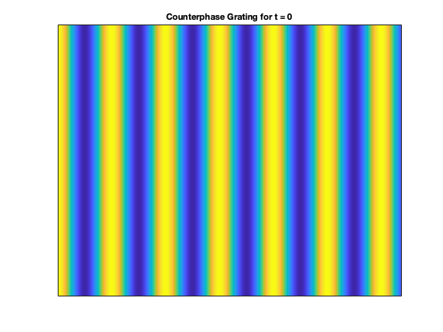 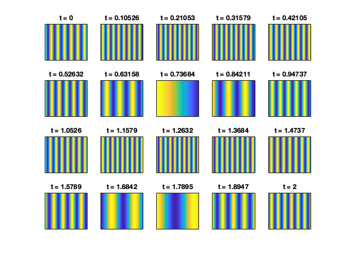 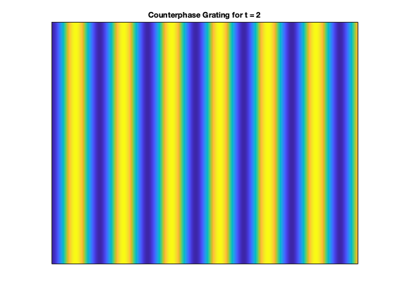
3 E
clear variables
k = 1;
sig = 2/k;
sigmax = sig;
sigmay = sig;
A = 1;
phi = 0;
K = k;
oo = -1.5:.02:1.5;
for i=1:numel(oo)
fun = @(x,y) ((1/(2*pi*sigmax*sigmay))*exp(-(x.^2)/(2*(sigmax.^2))-(y.^2)/(2*(sigmay.^2))).*cos(k*x-phi)).*(A*cos(K.*x.*cos(oo(i))+K.*y.*sin(oo(i))-phi));
Ls_A(i) = quad2d(fun,-100,100,-100,100);
end
figure
plot(oo, Ls_A)
xlabel('\theta (radians)')
ylabel('L_{s}')
title('Orientation Response (Figure A)');
clear variables
oo = 0;
k = 1;
sig = 2/k;
sigmax = sig;
sigmay = sig;
A = 1;
phi = 0;
K = 0:0.02:3;
for i=1:numel(K)
fun = @(x,y) ((1/(2*pi*sigmax*sigmay))*exp(-(x.^2)/(2*(sigmax.^2))-(y.^2)/(2*(sigmay.^2))).*cos(k*x-phi)).*(A*cos(K(i).*x.*cos(oo)+K(i).*y.*sin(oo)-phi));
Ls_B(i) = quad2d(fun,-100,100,-100,100);
end
figure
plot(K, Ls_B)
xlabel('K/k')
ylabel('L_{s}')
title('Spatial Frequency Response (Figure B)');
clear variables
oo = 0;
k = 1;
sig = 2/k;
sigmax = sig;
sigmay = sig;
A = 1;
K = k;
phi = -2.5:0.02:2.5;
for i=1:numel(phi)
fun = @(x,y) ((1/(2*pi*sigmax*sigmay))*exp(-(x.^2)/(2*(sigmax.^2))-(y.^2)/(2*(sigmay.^2))).*cos(k*x-phi(i))).*(A*cos(K.*x.*cos(oo)+K.*y.*sin(oo)-phi(i)));
Ls_C(i) = quad2d(fun,-50,50,-50,50);
end
figure
plot(phi, Ls_C)
xlabel('\phi')
ylabel('L_{s}')
title('Spatial Phase Response (Figure C)');
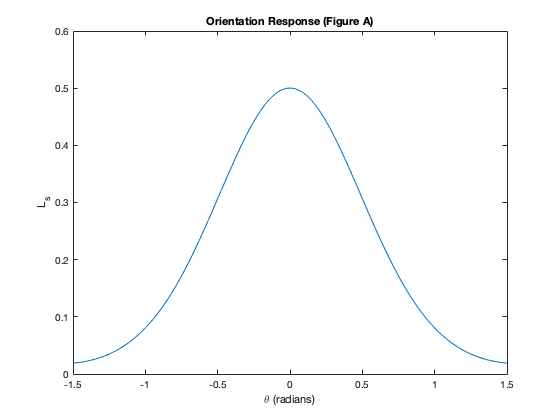 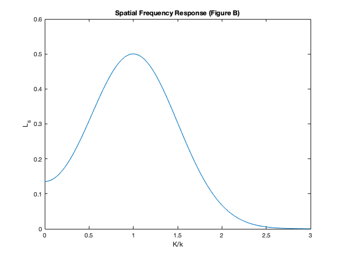 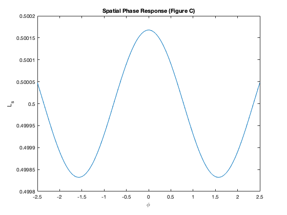
3 F
clear variables
alpha = 1/15;
dt = 0.2;
tau = 0:dt:1000;
t = 0:dt:1000;
w = 0:.01*.02:2*pi * .02;
for i=1:numel(w)
func1 = alpha*exp(-alpha*tau).*(((alpha*tau).^5)/(125)-((alpha*tau).^7)/5040);
func2 = cos(w(i)*(t));
convolution = dt*conv(func2,func1,'same');
pks=max(convolution);
amplitude(i) = (pks);
end
plot(w/(2*pi)*1000, amplitude)
xlabel('f (Hz)')
ylabel('A')
title('Frequency Response');
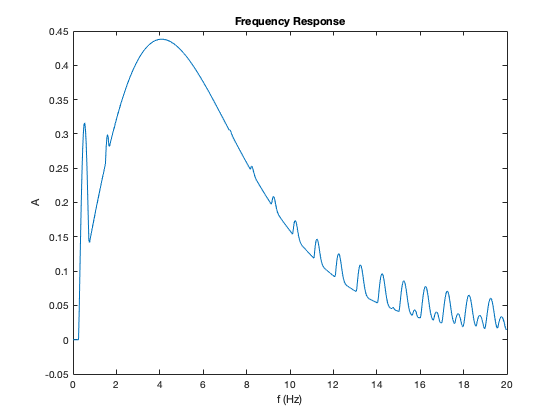